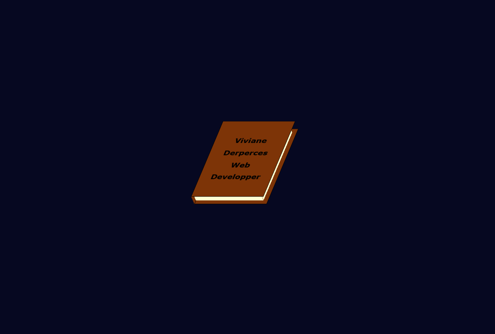

Qui suis-je ?
Avant de me lancer dans le développement web, j'ai baigné dans un univers plus littéraire, où la réflexion et l'analyse étaient primordiales.
La licence LLCER Anglais m'a permis d'acquérir des compétences transversales qui nourrissent désormais mon approche du développement web.
J'ai choisi de me reconvertir dans le domaine de l'informatique car il fait désormais partie intégrante de notre quotidien.
L'influence du numérique sur notre manière de communiquer, de travailler et même de vivre est grandissante, et j’ai envie de participer activement à cette transformation.
Technologies
HTML et CSS sont incontournables pour créer des pages webs fonctionnelles et structurées, accessibles et adaptées à tous types d'écrans.
Mes projets
Je suis particulièrement fière de mon portfolio en ligne, car j'ai pu laisser libre cours à mon imagination et améliorer mes compétences front-end.
N'hésitez pas à revenir sur cette page pour suivre mon évolution et découvrir mes nouveaux projets!
Me contacter
Je suis à la recherche d'opportunités d'échanges et de collaborations.
Si vous êtes intéressée par mon parcours ou si vous souhaitez me faire part de conseils, je serais ravie de discuter avec vous !